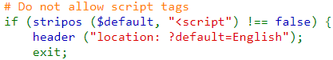
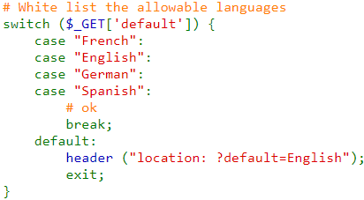

The minimum paatch for this vulnerability is disabling the attackers by not letting them use words like
`script`.

If there are fixed inputs for your JavaScript functions, it is better to fix the options and not allow any
other inputs.

The best fix for this vulnerability is by handling the everything on the client side. Using frameworks like
AngularJS and React will minimize risks.
Add content security policies to your webpages. You can find more about possible fixes and patches here, and here.
Now, you can try this by yourselves!